Повышение эффективности
Эффективные проекты стоят дешевле
и завершаются в срок.
Снижение потерь
Тщательно отслеживайте движение
стройматериалов, чтобы избежать краж
и повреждений.
Повышение безопасности
Обеспечьте здоровье и благополучие
людей, работающих на вашей площадке.
Строительство - это хаос
Хаос может быть удивительной творческой силой, воздвигающая новые здания из пыли.
Хаос вызывает несчастные случаи, задержки и потери. Он вводит проекты в стресс и разочарование.
Это означает, что вы действительно не контролируете ситуацию.
Мы заботимся о доставке на
стройплощадку и о людях,
которые на них рассчитывают
Мы знаем всё о гордости от сияющего нового здания.
Нам также известно всё о разочаровании от попыток
завершить проект в срок и в рамках бюджета.
Что такое СтройКонтроль?
СтройКонтроль - это интеллектуальная система управления доставкой,
предоставляющая информацию и контроль материалов на сложных строительных
площадках в режиме реального времени.
Отслеживайте доставку по всей цепочке поставок
От поставщика до субподрядчика - вы всегда знаете, где
находятся ваши материалы, благодаря чему обычные отходы
уходят в прошлое и сокращаются несчастные случаи на месте.
Оптимизируйте и контролируйте свое прибытие на место
Транспортные средства доставки прибывают в
фиксированные промежутки времени в заранее назначенные
отсеки, где разгрузочное оборудование готово и ждет их.
Возьмите под контроль данные в режиме реального времени
Интеллектуальная отчетность дает вам возможность
принимать решения в зависимости от того, как обстоят дела в
данный момент. Больше никаких ручных отчетов по заливке
бетона или ежемесячной проверки 10.000 накладных со
счетами, все это доступно онлайн без каких-либо усилий.
Доставка стала проще
Мы позаботимся обо всех ваших различных поставках и их
многочисленных специализированных требованиях к разгрузке.
beton
Поставки бетона точно
планируются, а его состояние
контролируется, что
обеспечивает максимально
возможное время для установки.
Утилизация отходов
Отходы контролируются и
сортируются, а заполненность
контейнеров отслеживается в
цифровом виде.
Опалубка
Поставки бетона точно
планируются, а его состояние
контролируется, что
обеспечивает максимально
возможное время для установки.
Сборные панели
Сборные панели прибывают по
очереди, их хранение на месте
отслеживается, а их установка
планируется и контролируется.

Фасады
Отходы контролируются и
сортируются, а заполненность
контейнеров отслеживается в
цифровом виде.
Отделка
Материалы поступают точно в
срок, маркируются и детально
отслеживаются для установки.
Строительные леса
Строительные леса
отслеживаются от получения до
хранения, использования и
возврата, поэтому всегда ясно,
что на месте и где.
Оборудование
Оборудование и операторы
гарантированно доступны в
случае необходимости, а иx
рабочее состояние отслеживается.
Электрика и сантехника
Доставка осуществляется в
точной последовательности для
сложной установки, что
сокращает или устраняет
необходимость в хранении.
и все остальные материалы,
которые поступают или покидают вашу площадку
Надёжность
Благодаря надёжному строительству выигрывают все - муниципальные органы
выполняют свои обязанности перед гражданами, инвесторы получают сертификаты
своих проектов, а генеральные подрядчики получают повышенную репутацию.

Сниженное загрязнение
При оптимизации логистики требуется
меньше поездок, что приводит к
снижению выбросов CO2.
Выбрасываемый CO2 контролируется,
что позволяет ставить цели и вносить
ощутимые улучшения.

Улучшенное управление отходами
Упрощается сортировка отходов,
автоматизируется утилизация отходов, а
поврежденные материалы при
необходимости используются повторно,
что снижает затраты и стимулирует
переработку и повторное использование.

Улучшенное влияние на общество
Уменьшаются проблемы с дорожным
движением и шумовое загрязнение, что
улучшает жизнь местного сообщества.
Улучшенное обращение с материалами
и хранение означает, что рабочие также
лучше защищены.
Надёжная конструкция СтройКонтроль входит в стандартную комплектацию.
Создан для строительства
